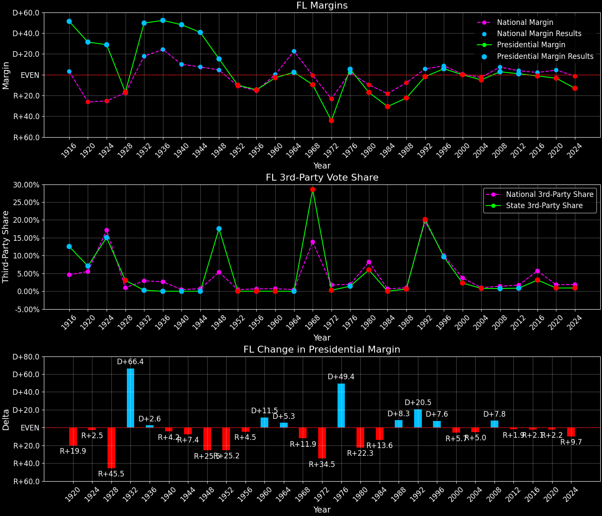

Florida (FL) — Statewide

Margins · 3rd-Party share · Pres. deltas

Relative margins · Relative 3rd-Party · Rel. deltas
Florida (FL) — Total Data
| Year | EVs | D | R | State Margin | Nat. Margin | Rel. Margin | Total votes |
|---|---|---|---|---|---|---|---|
| 1968 | 14 | 664,193(31.0%) | 863,405(40.3%) | R+9.3 | R+0.6 | R+8.7 | 2,143,613 |
| 1972 | 17 | 712,760(27.9%) | 1,845,942(72.1%) | R+44.3 (Δ R+35.0) | R+23.5 (Δ R+23.0) | R+20.8 (Δ R+12.0) | 2,558,702 |
| 1976 | 17 | 1,598,398(52.9%) | 1,422,405(47.1%) | D+5.8 (Δ D+50.1) | D+2.2 (Δ D+25.7) | D+3.6 (Δ D+24.4) | 3,020,803 |
| 1980 | 17 | 1,424,667(39.4%) | 2,008,306(55.5%) | R+16.1 (Δ R+22.0) | R+9.9 (Δ R+12.1) | R+6.2 (Δ R+9.9) | 3,616,599 |
| 1984 | 21 | 1,439,282(34.7%) | 2,712,061(65.3%) | R+30.7 (Δ R+14.5) | R+18.1 (Δ R+8.2) | R+12.5 (Δ R+6.3) | 4,151,343 |
| 1988 | 21 | 1,656,701(38.7%) | 2,618,885(61.3%) | R+22.5 (Δ D+8.2) | R+7.7 (Δ D+10.4) | R+14.8 (Δ R+2.2) | 4,275,586 |
| 1992 | 25 | 2,071,651(39.1%) | 2,171,781(41.0%) | R+1.9 (Δ D+20.6) | D+5.6 (Δ D+13.3) | R+7.5 (Δ D+7.3) | 5,295,913 |
| 1996 | 25 | 2,545,690(48.3%) | 2,242,951(42.5%) | D+5.7 (Δ D+7.6) | D+8.6 (Δ D+3.0) | R+2.8 (Δ D+4.7) | 5,272,402 |
| 2000 | 25 | 2,903,416(48.9%) | 2,901,229(48.9%) | D+0.0 (Δ R+5.7) | D+0.5 (Δ R+8.0) | R+0.5 (Δ D+2.3) | 5,938,753 |
| 2004 | 27 | 3,584,369(47.4%) | 3,962,527(52.4%) | R+5.0 (Δ R+5.0) | R+2.5 (Δ R+3.0) | R+2.5 (Δ R+2.1) | 7,567,906 |
| 2008 | 27 | 4,281,897(50.9%) | 4,045,801(48.1%) | D+2.8 (Δ D+7.8) | D+7.3 (Δ D+9.7) | R+4.5 (Δ R+1.9) | 8,409,207 |
| 2012 | 29 | 4,237,757(50.0%) | 4,163,446(49.1%) | D+0.9 (Δ R+1.9) | D+3.9 (Δ R+3.4) | R+3.0 (Δ D+1.5) | 8,474,134 |
| 2016 | 29 | 4,504,973(47.8%) | 4,617,886(49.0%) | R+1.2 (Δ R+2.1) | D+2.1 (Δ R+1.8) | R+3.3 (Δ R+0.3) | 9,419,885 |
| 2020 | 29 | 5,285,516(47.8%) | 5,659,054(51.2%) | R+3.4 (Δ R+2.2) | D+4.4 (Δ D+2.3) | R+7.8 (Δ R+4.5) | 11,061,107 |
| 2024 | 30 | 4,683,038(43.0%) | 6,110,125(56.1%) | R+13.1 (Δ R+9.7) | R+1.5 (Δ R+6.0) | R+11.6 (Δ R+3.7) | 10,893,752 |
Column explanations
- Δ
- Change (delta) in the value from the previous election year.
- Year
- Election year.
- EVs
- Number of electoral votes allocated to this state or unit.
- D
- Number of votes for the Democratic candidate (raw count(pct%)).
- R
- Number of votes for the Republican candidate (raw count(pct%)).
- State Margin
- Margin between the two major-party candidates, including third-party votes ((D - R)/total).
- Nat. Margin
- The national presidential margin for that year, including third-party votes ((D_total - R_total)/total_votes).
- Rel. Margin
- The presidential margin relative to the national presidential margin (Margin - Nat. Margin).
- Total votes
- Total voter turnout or ballots cast (when provided).
Florida (FL) — Third-Party Data
| Year | Other votes | State 3rd-Party Share | 3rd-Party Nat. Share | 3rd-Party Rel. Share |
|---|---|---|---|---|
| 1968 | 616,015(28.7%) | 28.74% | 13.59% | 15.15% |
| 1972 | 0(0.0%) | 0.00% | 0.09% | -0.09% |
| 1976 | 0(0.0%) | 0.00% | 0.33% | -0.33% |
| 1980 | 183,626(5.1%) | 5.08% | 6.98% | -1.90% |
| 1984 | 0(0.0%) | 0.00% | 0.12% | -0.12% |
| 1988 | 0(0.0%) | 0.00% | 0.21% | -0.21% |
| 1992 | 1,052,481(19.9%) | 19.87% | 19.23% | 0.64% |
| 1996 | 483,761(9.2%) | 9.18% | 9.68% | -0.50% |
| 2000 | 134,108(2.3%) | 2.26% | 3.65% | -1.39% |
| 2004 | 21,010(0.3%) | 0.28% | 0.84% | -0.56% |
| 2008 | 81,509(1.0%) | 0.97% | 1.38% | -0.41% |
| 2012 | 72,931(0.9%) | 0.86% | 1.62% | -0.76% |
| 2016 | 297,026(3.2%) | 3.15% | 5.54% | -2.38% |
| 2020 | 116,537(1.1%) | 1.05% | 1.84% | -0.79% |
| 2024 | 100,589(0.9%) | 0.92% | 1.88% | -0.96% |
Column explanations
- Year
- Election year.
- Other votes
- Number of votes for third-party (other) candidates (raw count(pct%)).
- State 3rd-Party Share
- Share of the vote received by third-party (other) candidates.
- 3rd-Party Nat. Share
- The national third-party share for that year (3rd-Party votes / total votes).
- 3rd-Party Rel. Share
- Third-party share relative to the national third-party share (3rd-Party share - Nat. 3rd-Party share).

Two-party margins · relative · deltas
Florida (FL) — Two-Party Data
| Year | 2-Party Margin | 2-Party Nat. Margin | 2-Party Rel. Margin |
|---|---|---|---|
| 1968 | R+13.0 | R+0.7 | R+12.4 |
| 1972 | R+44.3 (Δ R+31.2) | R+23.6 (Δ R+22.9) | R+20.7 (Δ R+8.4) |
| 1976 | D+5.8 (Δ D+50.1) | D+2.2 (Δ D+25.8) | D+3.6 (Δ D+24.4) |
| 1980 | R+17.0 (Δ R+22.8) | R+10.6 (Δ R+12.8) | R+6.4 (Δ R+10.0) |
| 1984 | R+30.7 (Δ R+13.7) | R+18.1 (Δ R+7.5) | R+12.5 (Δ R+6.2) |
| 1988 | R+22.5 (Δ D+8.2) | R+7.8 (Δ D+10.4) | R+14.7 (Δ R+2.2) |
| 1992 | R+2.4 (Δ D+20.1) | D+6.9 (Δ D+14.7) | R+9.3 (Δ D+5.5) |
| 1996 | D+6.3 (Δ D+8.7) | D+9.5 (Δ D+2.6) | R+3.1 (Δ D+6.1) |
| 2000 | D+0.0 (Δ R+6.3) | D+0.5 (Δ R+8.9) | R+0.5 (Δ D+2.7) |
| 2004 | R+5.0 (Δ R+5.0) | R+2.5 (Δ R+3.0) | R+2.5 (Δ R+2.0) |
| 2008 | D+2.8 (Δ D+7.8) | D+7.4 (Δ D+9.8) | R+4.5 (Δ R+2.0) |
| 2012 | D+0.9 (Δ R+2.0) | D+3.9 (Δ R+3.4) | R+3.0 (Δ D+1.5) |
| 2016 | R+1.2 (Δ R+2.1) | D+2.2 (Δ R+1.7) | R+3.5 (Δ R+0.4) |
| 2020 | R+3.4 (Δ R+2.2) | D+4.5 (Δ D+2.3) | R+7.9 (Δ R+4.5) |
| 2024 | R+13.2 (Δ R+9.8) | R+1.6 (Δ R+6.1) | R+11.7 (Δ R+3.7) |
Column explanations
- Δ
- Change (delta) in the value from the previous election year.
- Year
- Election year.
- 2-Party Margin
- Margin between the two major-party candidates, ignoring third-party votes ((D - R)/(D + R)).
- 2-Party Nat. Margin
- The national presidential margin for that year, including third-party votes ((D_total - R_total)/total_votes).
- 2-Party Rel. Margin
- The presidential margin relative to the national presidential margin (Margin - Nat. Margin).